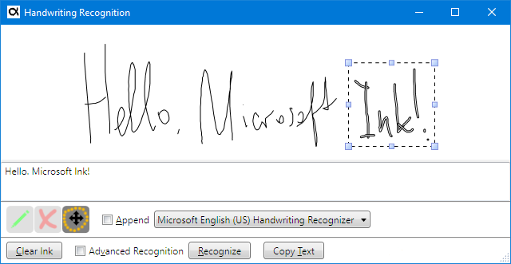
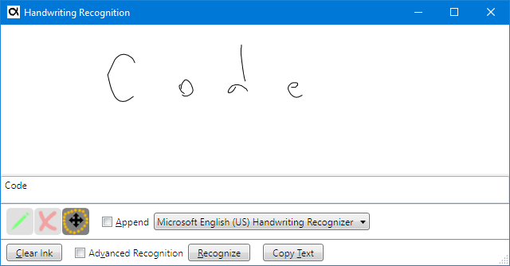
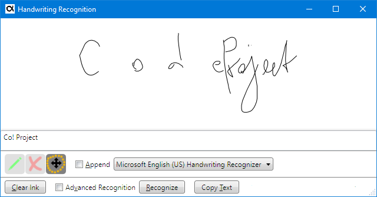
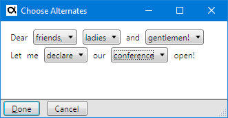

It seems that since the introduction of Microsoft Windows XP PC Edition of 2005 its handwriting recognition has been abandoned. The functionality which comes with one of the software keyboards suggests that the feature is rendered defunct. This is not entirely true. All you need is to know how properly expose handwritten API and embed it in your application.

Epigraph:
A skeptic is a person who, when he sees the handwriting on the wall, claims it is a forgery.
Morris Bender
Contents
Motivation
Microsoft Handwriting Recognition Problems
Windows 10 On-Screen Keyboard Usability
Prerequisites
Collecting Ink Data
Simplest Recognition
Collecting Ink Data: Closer Look
Adjusting Strokes
Recognizing Selected Strokes
Recognizing in Different Languages
Recognizing with Alternates
The Interface for Selection of the Alternates
Testing Supported Properties
Background Recognition and Synchronization
Where the Alternates Come From?
Putting All Together
What About Microsoft.Ink.Analysis?
What Else?
Build and Compatibility
Conclusions
Motivation
Epigraph:
There is nothing more stimulating than a case where everything goes against you.
Sherlock Holmes, The Hound of the Baskervilles by Sir Arthur Conan Doyle
About 2005, I was pleasantly surprised by the quality of the handwriting recognition available with Microsoft Tablet PC. I didn’t have a Tablet PC, I only had a drawing tablet and done a good deal of drawing, only wanted to get better use of it. It turns out that one doesn’t really need a Tablet PC, as it was quite enough to install a separate product, an SDK for this product, and that it could be used on a non-specialized Windows version. It’s hard to understand why Microsoft could not supply something equivalent to the other users, not software developers. The demo software supplied with SDK was already fairly good to serve as a user-level software. I could not say it was perfect, but even to me. it was almost practical to enter texts using a pen. If I had to work without a physical keyboard, I would even use it in my practice.
Now I have a touch screen nearly anywhere, and a nice fine-line stylus, moreover, all the computers are a lot more powerful, but… where is that nice demo application? I’m not sure I can find the Tablet PC SDK anymore. And what is bundled with Windows 10 is by far not good enough. In principle, the recognition quality is just the same as in 2005, but the applications themselves cannot give me a fraction of the convenience of the handwritten input of 2005.
So, I wondered if can we get the achievements of 2005 back and use handwriting recognition in more practical ways. This is what I found: oh, yes, we can, and even more! It just needs some extra effort.
Microsoft Handwriting Recognition Problems
Epigraph:
You may not be able to read a doctor's handwriting and prescription, but you'll notice his bills are neatly typewritten.
Earl Wilson
Microsoft Windows pen computer components really offer very good performance and quality of recognition.
But… only if you know what to use. It may take a fair amount of time spent on boring research and testing of different ways of recognition, facing unexpected failures that happen only in some special cases. Let me overview several problems and the cases of inconsistent API or behavior I faced:
- The choice of SDK is a problem, because of…
- Poor or misleading documentation, which is a problem by itself,
- Not all features are really implemented,
- It looks like SDK is totally oriented to
System.Windows.Forms, which is not exactly so, but requires some work-around, - User-level handwriting support is hidden and barely usable, but let’s take a close look at it:
Windows 10 On-Screen Keyboard Usability
First, click main many, Ctrl+Esc, and type “Keyboard”. It will lead you to “On-Screen Keyboard”. Start it and try to find handwriting recognition mode. No, there is no such thing! Okay, try to check up if a handwriting recognition engine is installed. To do so, start main Settings menu => “Time & Language” => “Region & Language”. You can see one or more languages with the handwriting icon shown. And still, it isn’t shown on your On-Screen Keyboard.
However, the feature is there. You will see it if you use another way. Right-click on a toolbar to see a toolbar’s context menu and select “Show touch keyboard button”. When the button is added to a toolbar, click on it. Bingo! It shows handwriting recognition mode, speech recognition mode (may require a separate article) and other features. But… How so?! How it’s possible to confuse the final users so much? Again, that said that Microsoft pays very little attention to integrating the otherwise high-quality handwriting recognition into the OS’s UI.
Another thing which renders the application virtually unusable is the gesture recognition. In addition to the handwriting recognition, the application uses gestures to fix some already written text. We may need to scratch out badly recognized or incorrectly written text, separate or join some fragment. But how the application can tell the gesture strokes from the strokes used to form characters? The answer is: hardly. In fact, the application cannot reliably tell one thing from another and makes a lot of mistakes, so fixing the wrong text is so much pain, that starting over is usually much easier. This is just a big misconception.
There are many other major and minor problems that make using this application difficult to use, but I would specifically blame the idea of asynchronous recognition. The strokes are recognized concurrently with the user input, removed, and converted to text as they are recognized. The user cannot control those events, which looks like unpredictable behavior, causes a lot of mistakes.
Okay, we got a handwriting recognition keyboard, but does it worth the effort? Try it out and judge by yourself, but I personally doubt it. No, I think it is simply unusable.
But does it mean that the handwriting recognition in Windows is that bad? Not at all! I think it is very good, but not presented to the final user in any reasonable way.
Below, I’ll try to show how to really all this recognition excellence readily available in the engine.
Prerequisites
Basically, .NET 3.5 or later is required, as well as one or more language packs supporting handwriting.
The demo software can be built as-is on Windows 7 or later, including Windows 10. The installation will include at least one language pack.
However, it would be better to locate the file “Microsoft.Ink.dll” and change the references: remove “Microsoft.Ink.dll” I provide in the directory “Assemblies” and replace it with the file found in the existing installation. The file can be located in “c:\Program Files\Common Files\microsoft shared\ink” or “c:\Program Files\Reference Assemblies\Microsoft\Tablet PC\v1.7”. If this file is not found, the installation of the latest Platform SDK will help. Presently, Windows 7 Platform SDK should suffice.
It is possible, that, for some cultures, the default language pack does not support handwriting recognition. The demo application will reveal this situation, showing appropriate status. In this case, an additional language pack can be installed.
It can also be used for older versions of OS, starting with:
Windows 2000 Service Pack 4 Windows Server 2003 Windows XP Professional Edition Windows XP Tablet PC Edition 2005
In these cases, the old Microsoft Tablet PC SDK needs to be installed. I don’t know where to find the Tablet PC SDK installation. Starting from Windows Vista, Tablet PC SDK is supplied with the Platform SDK.
Visual Studio is not required; the software can be built using supplied file “build.batch”. In this case, it will use the compiler bundled with .NET.
SDK Help can be found here:
https://docs.microsoft.com/en-us/previous-versions/dotnet/netframework-3.5/ms571346%28v%3dvs.90%29,
https://docs.microsoft.com/en-us/previous-versions/dotnet/netframework-3.5/ms581553%28v=vs.90%29
The path to find help from Microsoft help page: Previous Versions Docs (bottom of the page) => .NET => .NET Framework 3.5 => General Reference for the .NET Framework => Additional Managed Reference Topics => Microsoft.Ink Name space => …
Collecting Ink Data
<ResourceDictionary>
<Style x:Key="grip" TargetType="ui:LocationGrip">
<Setter Property="Cursor" Value="SizeAll"/>
<Setter Property="Width" Value="{StaticResource locationGripSelectionSize}"/>
<Setter Property="Height" Value="{StaticResource locationGripSelectionSize}"/>
<Style.Triggers>
</Style>
</ResourceDictionary>
Simplest Recognition
Let’s say, ink strokes data is collected as a collection System.Windows.Ink.StrokeCollection. This is how it can be recognized as a text string in the simplest way:
using StrokeCollection = System.Windows.Ink.StrokeCollection;
using MemoryStream = System.IO.MemoryStream;
using Microsoft.Ink;
static class TextRecognizer {
internal static string Recognize(StrokeCollection strokes) {
using (var ink = new Ink()) {
PopulateInk(ink, strokes);
return ink.Strokes.ToString();
}
}
private static void PopulateInk(Ink ink, StrokeCollection strokes) {
using (var ms = new MemoryStream()) {
strokes.Save(ms);
ink.Load(ms.ToArray());
}
}
}
Note that System.Windows.Ink.StrokeCollection and Microsoft.Ink.Strokes are unrelated types, as well as corresponding Stroke types. They are assignment-incompatible but have identical stream representations. This way, Microsoft.Ink.Ink objects can be populated with strokes borrowed from a WPF System.Windows.Ink.StrokeCollection collection through a memory stream, as PopulateInk does.
The recognition itself is performed in the overridden Microsoft.Ink.Ink.Strokes.ToString method. This simplest recognition method works only for the default input language configured for the system and current user.
Before going in for more advanced handwriting recognition, let’s get back to ink collection and discuss some more advanced detail.
Collecting Ink Data: Closer Look
Adjusting Strokes
Epigraph:
It was decided to make it totally error-free. They produced twenty proofreading prints and nevertheless on the title page it was printed: "Encyclopidae Britannica"
Ilya Ilf
The control class System.Windows.Controls.InkCanvas already has everything needed to manipulate already entered strokes.
Separation of ink input into separate lexemes is not trivial at all. What is a separate word? This is not a single stroke, because a user can touch the screen with a stylus several times while writing a single work; even a single letter (“i”, “j” and the like) make require two or more touches. The separation is judged by relative sizes of blank spaces, stroke sizes, and other features. A space between strokes can be considered a blank space or just a gap between characters in a single word, depending on several factors, including sizes of other spaces in the same collection of strokes. To fill it, let’s look at the following funny example. Let’s try to enter “CodeProject” as one word. Let’s start with “Code” using wide letter spacing, try to recognize it, and then will add “Project” on right. Note that fist stroke collection is recognized as “Code”, not as “C o d e”:


We can see that adding strokes for “Project” changes recognition of “Code”. Not only the gap between “d” and “e” turned the blank space, but our intended “d e” was recognized as "! ". It happened because condensed letter spacing in “eProject” compared to wide spacing in “Code” confuses the recognizer. Try, for example, to move “Project” a bit to write, and you will get “Code Project”.
That said, it’s important to have a tool to adjust the positions of some subsets of strokes. We also need a way to delete some strokes and re-enter them without removing the entire image.
In my demo application, one can see three radio buttons styled as three image toggle buttons (selected one is more contrast and darker): “Ink mode (Ctrl or Shift up)”, “Eraser mode (Ctrl down)” and “Select/Move/Scale/Erase mode (Shift down)”:
These three strings are shown in the controls’ hints and also in the status line located at the bottom. The modes can be switches by the clicks, the way normal radio buttons act, and also as the hints in brackets suggest, these modes can be chosen temporarily using the keyboard status keys Ctrl and Shift. To do so, the strokes can be manipulated while holding Ctrl or Shift; when a key is released, the status gets back to default Ink mode.
In the Eraser mode, a stroke is removed when crossed by a strike-our gesture. (There is another System.Windows.Controls.InkCanvas input mode when a stroke is deleted by clicking in a line, but this is utterly inconvenient as it requires too fine gesture accuracy.)
In the Select/Move/Scale/Erase mode, a set of strokes can be selected with a lasso and then either moved around, scaled, or deleted. There is no need to close a lasso; just the opposite: an incomplete lasso curve actually helps to isolate subsets of strokes with highly overlapping regions.
This feature is very important, as it helps to join two sets of strokes to be recognized as a single word, or move them apart, to make them recognized as two separate words.
Finally, I added the function to remove the last stroke entered using Ctrl-Z. Please don’t expect full undo/redo functionality from my demo: the implementation is pretty obvious, but I don’t see a good reason to bother about it. It would be much easier to simply enter a stroke again.
Let’s start with this Ctrl+Z feature, which turned out to be not as trivial as it may seem. This is because there is no such function in the API. (There is a method of erasing ink in a rectangular region, which is totally inadequate, as the regions of different strokes often overlap). Instead, Strokes.Replace should be used:
var emptyStrokeCollection = new StrokeCollection();
inkCanvas.Strokes.Replace(inkCanvas.Strokes[inkCanvas.Strokes.Count - 1], emptyStrokeCollection);
Setting any of the three System.Windows.Ink.StrokeCollection editing modes is trivial:
inkCanvas.EditingMode = InkCanvasEditingMode.Ink;
inkCanvas.EditingMode = InkCanvasEditingMode.EraseByStroke;
inkCanvas.EditingMode = InkCanvasEditingMode.Select;
Also, I would like to warn against using InkCanvasEditingMode.InkAndGesture. Yes, this mode allows for recognition of gestures and separate them from ink strokes representing text input. However, the confidence of such separation is not so good, even though if only few gestures are enabled using System.Windows.Controls.InkCanvas.SetEnabledGestures. Indeed, many of the gestures enumerated as System.Windows.Ink.ApplicationGesture can be easily confused with characters. Here and there, the recognizer fails to recognize a stroke as text accepting it as a gesture, and visa versa. This is what happens with Windows 10 On-Screen Keyboard behavior, which makes handwriting quite difficult, especially if some correction of strokes is required.
By all counts, the InkCanvas behavior utilizing different editing modes described above is much more convenient than the behavior of Windows 10 On-Screen Keyboard application.
Recognizing Selected Strokes
Once we can select some subset of the entered strokes, we can pass those selected strokes to recognition when the System.Windows.Controls.InkCanvas is in the Select mode. In this case, only the selected strokes will be recognized. When nothing is selected, we need to pass all the strokes. Let’s add this to the handler of the “Recognize” button:
var strokes = inkCanvas.Strokes;
if (inkCanvas.EditingMode == InkCanvasEditingMode.Select) {
var selectedStrokes = inkCanvas.GetSelectedStrokes();
if (selectedStrokes.Count > 0)
strokes = selectedStrokes;
}
Recognizing in Different Languages
Epigraph:
A family of mice was surprised by a big cat. Father Mouse jumped and said, “Bow-wow!”
The cat ran away.
“What was that, Father?” asked Baby Mouse.
“Well, son, that's why it's important to learn a second language.”
Well, let’s add a second language to the system and see if we can achieve handwriting recognition for each language. If the system has only one handwriting recognition language pack, an additional language pack can be downloaded and installed. In particular, with Windows 10 it can be done using main Settings menu => “Time & Language” => “Region & Language” => “Add Language”. It pops up a dialog showing supported languages with a small legend at the button helping to see if handwriting recognition is supported for a required language.
When the language packs are set up, the software can poll the set using the class Microsoft.Ink.Recognizers. The constructor of this class creates an object serving as a container of the set of Microsoft.Ink.Recognizer object. Each Recognizer instance actually represents a handwriting recognition language pack. Typically, this is not a single language, but a set of sub-languages represented as Microsoft.Ink.Recognizer.Languages, and array of short integer values each representing a language ID. Low byte of this word represents a primary language and the high byte represents a sub-language. See https://docs.microsoft.com/en-us/windows/win32/intl/language-identifier-constants-and-strings for more detail.
To provide the selection of desired language pack to use, we can put all Recognizer instances in a combo box:
using Microsoft.Ink;
public partial class MainWindow {
private int SetupRecognizerSet() {
var defaultRecognizer = recognizerSet.GetDefaultRecognizer();
int defaultRecognizerIndex = 0;
for (int index = 0; index < recognizerSet.Count; ++index) {
var recognizer = recognizerSet[index];
if (recognizer.Languages.Length > 0)
this.listLanguages.Items.Add(recognizer);
if (recognizer.Name == defaultRecognizer.Name)
defaultRecognizerIndex = index;
}
var count = listLanguages.Items.Count;
if (count < 1) return count;
listLanguages.SelectedIndex = defaultRecognizerIndex;
listLanguages.Focus();
return count;
}
private Recognizers recognizerSet = new Microsoft.Ink.Recognizers();
}
Note that I place this part of a main form class in a separate file and a separate class part using partial. Among other things, it helps me to isolate the namespaces having similarly or identically named but different declarations, Microsoft.Ink and System.Windows.Ink, which makes the code more readable without redundant fully-qualified names.
Also note the identity problem mentioned above in the code sample. This is a little defect of the Microsoft.Ink.Recognizer class which can be explained in the following way:
var recognizerSet = new Microsoft.Ink.Recognizers();
var recognizer1 = recognizerSet[0];
var recognizer2 = recognizerSet[0];
That’s why I compare recognizers by name. Just be careful.
Now when all Recognizer instances are collected, we can extract an instance from the combo box Items in the handler of the “Recognize” button:
Main.IRecognitionResultSelector selectorToUse = this.checkBoxAdvanced.IsChecked == true ? selector : null;
string text = Main.TextRecognizer.Recognize(
strokes,
(Microsoft.Ink.Recognizer)(this.listLanguages.SelectedItem),
selectorToUse);
I will explain the last function argument selectorToUse later. It works if the check box checkBoxAdvanced “Advanced Recognition” is checked. For now, let’s assume it is not checked; then this argument is null.
Now let’s see how the function Main.TextRecognizer.Recognize works. With several languages, using just Microsoft.Ink.Ink won’t be enough, but can be used as default when an instance of Microsoft.Ink.Recognizer is not determined (null in our case). For recognition, we need another object, an instance of Microsoft.Ink.CreateRecognizerContext which needs disposal automatically performed at the exit from the scope of the using construct:
using StrokeCollection = System.Windows.Ink.StrokeCollection;
using MemoryStream = System.IO.MemoryStream;
using ManualResetEvent = System.Threading.ManualResetEvent;
using Microsoft.Ink;
static class TextRecognizer {
internal static string Recognize(
StrokeCollection strokes,
Recognizer recognizer,
Main.IRecognitionResultSelector selector
) {
using (var ink = new Ink()) {
PopulateInk(ink, strokes);
if (recognizer == null)
return ink.Strokes.ToString();
using (var context = recognizer.CreateRecognizerContext()) {
if (ink.Strokes.Count < 1) return null;
context.Strokes = ink.Strokes;
if (selector == null) {
RecognitionStatus status;
var result = context.Recognize(out status);
if (status == RecognitionStatus.NoError)
return result.TopString;
else
return null;
} else
return RecognizeWithAlternates(context, selector);
}
}
}
}
I think the recognition itself is self-explaining.
Now I have to explain those parts marked with the comments “will explain it later”. It is related to an even more advanced method of recognition (I enable optionally in my demo application, via the check box “Advanced Recognition”). This is the recognition with the alternates. To show how it works, it will be enough to show the type of the argument selector and its use in the method RecognizeWithAlternates.
Recognizing with Alternates
If you excessively concentrate on a closed door, you may miss the alternative easy entries! Mehmet Murat Ildan
One should always look for a possible alternative, and provide against it. -Sherlock Holmes Sir Arthur Conan Doyle
When you have two alternatives, the first thing you have to do is to look for the third that you didn’t think about, that doesn’t exist. Shimon Peres
Who would you rather be with: someone with more alternatives or someone with fewer? Andy Dunn
The Interface for Selection of the Alternates
First of all, let’s define the interface type for some object responsible for the representation of the alternates in the UI and selection of the desired combination of the alternates:
using Microsoft.Ink;
interface IRecognitionResultSelector {
string Select(Recognizer recognizer, RecognitionResult result);
}
The implementation of this interface should take an instance of Microsoft.Ink.RecognitionResult, present all the alternates to the user and give a user the choice. Depending on the user selection, the implementation returns the resulting string, one of the many possible combinations of the recognized words:

Note that only some of the words are shown without the choice. This is the implementation behavior option I just found practical: if the recognition confidence for some word is Microsoft.Ink.RecognitionConfidence.Strong (which is top confidence), it is shown as a text block, not as a selection combo box. Moreover, if the entire ink input passed to the recognizer is recognized with top confidence, this window is not shown at all; the IRecognitionResultSelector.Selector implementation simply returns the recognized top-confidence string.
The implementation of this behavior is another problem. Let’s address it.
Testing Supported Properties
Here is the problem: when we try to examine an instance of Microsoft.Ink.RecognitionResult for the recognition confidence, it may work for one language pack (Recognizer) and throw the exception “The specified property identifier was invalid” for another one.
using Microsoft.Ink;
string Main.IRecognitionResultSelector.Select(Recognizer recognizer, RecognitionResult result) {
var confidence = result.TopConfidence;
var alts = result.GetAlternatesFromSelection(positions[index], words[index].Length);
var topAlternateConfidence = alts[0].Confidence;
}
That said, before we read those TopConfidence or Confidence properties, we have to check up if their implementations are really supported for a given instance of Microsoft.Ink.Recognizer. That’s why the interface method IRecognitionResultSelector.Select uses the recognizer argument. This is how it can be found:
private static bool IsConfidenceLevelPropertySupported(Recognizer recognizer) {
bool result = false;
foreach (var guid in recognizer.SupportedProperties)
if (guid == RecognitionProperty.ConfidenceLevel) {
result = true;
break;
}
return result;
}
Then we can use the properties to determine the level of confidence carefully. If the property implementation corresponding to RecognitionProperty.ConfidenceLevel is supported, we can call TopConfidence or Confidence. If it is not supported, we simply assume that the confidence is always poor, that’s it, the selector UI windows is always shown and the alternates for every word are presented to the user.
Background Recognition and Synchronization
Now it’s time to show how RecognizeWithAlternates works. There is one little problem to be solved. In Microsoft.Ink, there is only one method of recognition with alternates, and this method is asynchronous: Microsoft.Ink.RecognizerContext.BackgroundRecognizeWithAlternates. This is a void method working through the event Microsoft.Ink.RecognizerContext.RecognitionWithAlternates. But my calling code is designed for synchronous behavior. First of all, the instance of System.Ink.RecognizerContext is synchronously disposed of in each recognition event. If BackgroundRecognizeWithAlternates is called withing the using statement block, the event handler of the RecognitionWithAlternates event will never be invoked.
So, in my demo application, I maintain synchronous recognition, and I mean it. I hate the idea implemented in the 10 Windows 10 On-Screen Keyboard, when recognition is performed while I write with a stylus, converting my strokes with text objects at some unpredictable moments, no matter if I consider my input complete or not. I really want recognition performed on my command. This is not a problem to implement asynchronous behavior, but I want to make it synchronous. This problem is simply solved using the closure functionality and System.Threading.ManualResetEvent:
using ManualResetEvent = System.Threading.ManualResetEvent;
using Microsoft.Ink;
private static string RecognizeWithAlternates(
RecognizerContext context,
Main.IRecognitionResultSelector selector)
{
RecognitionResult result = null;
ManualResetEvent completionEvent = new ManualResetEvent(false);
context.RecognitionWithAlternates += (
object sender,
RecognizerContextRecognitionWithAlternatesEventArgs e) => {
result = e.Result;
completionEvent.Set();
};
context.BackgroundRecognizeWithAlternates();
completionEvent.WaitOne();
return selector.Select(context.Recognizer, result);
}
However, there is no a need to use this simple synchronization. Even if we want the recognition to be triggered by a user command, we can keep it asynchronous, because the strokes are fed to the RecognizerContext synchronously. The asynchronous processing of stroke will recognize all available strokes and enter a wait state.
I implemented the synchronization-based mechanism be the following reason, 1) it is fully sufficient, 2) it is more suitable for my didactic purposes, and this is because I wanted to demonstrate three different recognition methods inside a single method static string Recognize, 3) this is probably the simplest approach.
Let’s see how the asynchronous recognition may look and how complicated it can be. Not a big problem, actually. First of all, we need to start BackgroundRecognizeWithAlternates each time the language pack is selected by the user, immediately after the instance of RecognizerContext is instantiated. Previously instantiated RecognizerContext object, if one was previously instantiated, needs to be disposed of. Before the termination of the application, the instantiated instance of this class should stop recognition and then be disposed of.
It’s a good idea to use the method with additional argument customData: System.Ink.RecognizerContext.BackgroundRecognizeWithAlternates(object customData). I would use this argument for passing some UI object, best of all, the implementation of some interface implemented by some window class. This object will be passed as a part of the event arguments object in the System.Ink.RecognizerContext.RecognizerContextRecognitionWithAlternatesEventHandler event when this event is invoked. The implementation of this interface should take the instance of RecognitionResult and use it to populate the UI. One ugly aspect will be the need to type-cast object customData to required runtime type instance.
Quite obviously, expect that the event handler is invoked in a separate thread. That said, the UI should be manipulated only via System.Windows.Threading.Dispatcher.Invoke.
I don’t see a point in this minor complication, so I’ll leave it for a home exercise of the interested readers.
Where the Alternates Come From?
So, far, I haven’t explained how alternates work, and this is not so obvious thing. This will be the last missing piece related to recognition with alternates. Let’s see.
Let’s say we already obtained the instance of Microsoft.Ink.RecognitionResult. This is the simplest way to get a set of alternates:
string Main.IRecognitionResultSelector.Select(Recognizer recognizer, RecognitionResult result) {
int maximumNumberOfAlternates = 0x100;
string text = result.TopString;
var alternates = result.GetAlternatesFromSelection(0, text.Length, maximumNumberOfAlternates);
foreach (var alt in alts)
someComboBox.Items.Add(alt.ToString());
return someComboBox.SelectedItem.ToString();
}
It will work and will gives us as many variants as we want (the limiting number can be specified as maximumNumberOfAlternates). But this is totally impractical. Moreover, it is redundant and insufficient at the same time. If, say, the recognition creates partitioning of the recognized text into 9 lexemes, and each lexeme has 10 alternates (the default for this API), it gives 10⁹ = 1,000,000,000 variants, while only 10 alternates per lexeme, 90 total, are needed to fully describe the result of recognition. Most of these variants will make no sense, and still, the expected variant could be missing. The call to result.GetAlternatesFromSelection() (without parameters) will return only 10 combined alternates, so in our example, each lexeme cannot show more than two alternates.
The real intent of this rather weird API is different. It can represent separate alternates per lexeme, as it is shown above. The thing is, the partitioning of the recognized text is the same for all alternates. It is assumed that we have to parse result.TopString into lexemes by the blank space character and, for each lexeme, pass its location in this string to result.GetAlternatesFromSelection separately for each lexeme:
public partial class RecognitionResultSelectorWindow :
Window, Main.IRecognitionResultSelector {
string Main.IRecognitionResultSelector.Select(
Recognizer recognizer,
RecognitionResult result) {
string topResult = result.TopString;
var confidenceLevelPropertySupported =
IsConfidenceLevelPropertySupported(recognizer);
var words = topResult.Split(Main.DefinitionSet.WordSeparator);
int currentPosition = 0;
int[] positions = new int[words.Length];
for (var index = 0; index < words.Length; ++index) {
positions[index] = currentPosition;
currentPosition += words[index].Length + 1;
var alts = result.GetAlternatesFromSelection(
positions[index],
words[index].Length);
foreach (var alt in alts) { }
if (ShowDialog() != true) return null;
return
}
}
}
For complete implementation, see “Ui/RecognitionResultSelectorWindow.xaml.cs”.
Putting All Together
For complete implementation of the recognition, please see original source code, “Main/IRecognitionResultSelector.cs”, “Main/TextRecognizer.cs”, “Ui/RecognitionResultSelectorWindow.xaml” and “Ui/RecognitionResultSelectorWindow.xaml.cs”.
Let’s summarize it.
The UI “Recognize” button handler calls the method Main.TextRecognizer.Recognize. It creates an instance of Microsoft.Ink.Ink and populates it with the strokes passed as the first argument System.Windows.Ink.StrokeCollection. The second argument is of the type Microsoft.Ink.Recognizer. If it is null, the simplest recognition is performed as ink.ToString(), for default language pack. If not (in my demo application this is always the case), the recognition is performed with for a selected language pack using the method Microsoft.Ink.RecognizerContext.Recognize, where the instance of Microsoft.Ink.RecognizerContext is obtained from the Recognizer instance selected by the user. Finally, if the third argument Main.IRecognitionResultSelector selector is not null, the recognition with alternates is performed.
The method Main.TextRecognizer.RecognizeWithAlternates accepts the instances of Microsoft.Ink.RecognizerContext and Main.IRecognitionResultSelector selector to call the method Microsoft.Ink.RecognizerContext.BackgroundRecognizeWithAlternates to obtain recognition result passed through an event argument of the type Microsoft.Ink.RecognizerContextRecognitionWithAlternatesEventArg passed to the handler of the event Microsoft.Ink.RecognizerContext.RecognitionWithAlternates.
Obtained instance of Microsoft.Ink.RecognitionResult is passed to the implementation of the interface Main.IRecognitionResultSelector which parses recognized TopString of the recognition result to obtain the sets of alternates for each lexem of this string. After the user confirms selection of alternates, resulting string is returned to the UI.
What About Microsoft.Ink.Analysis?
“Microsoft.Ink.Analysis.dll” is another main assembly module found in Microsoft Tablet PC SDK. Unlike “Microsoft.Ink”, I could not find it in my Windows 10 installation. It comes along with “Microsoft.Ink.dll” when Microsoft Tablet PC SDK is additionally installed as a part of the platform SDK. In my case, it appears in “c:\Program Files\Reference Assemblies\Microsoft\Tablet PC\v1.7”.
According to Tablet PC SDK documentation, Microsoft.Ink.Analysis presents the alternative way of ink data recognition, including handwriting recognition, several advanced features. In particular, handwriting can be recognized using Microsoft.Ink.InkInkAnalyzer.Analyze, and the class Microsoft.Ink.InkRecognizer plays roughly the same role in Microsoft.Ink.InkInkAnalyzer as the class Microsoft.Ink.Recognizer in Microsoft.Ink.
However, the attempt to use this API makes the usage of this assembly somewhat questionable. First of all, the attempt to call Microsoft.Ink.InkInkAnalyzer.Analyze on a properly setup analyzer instance throws the exception FileNotFoundException: {"Could not load file or assembly 'IALoader, Version=1.7.6223.0, Culture=neutral, PublicKeyToken=31bf3856ad364e35' or one of its dependencies. The system cannot find the file specified.":"IALoader, Version=1.7.6223.0, Culture=neutral, PublicKeyToken=31bf3856ad364e35"}. Apparently, the file is not found. The file in question, “IALoader.dll” can be found under “Program Files” and added.
Very well, now the call throws the BadImageFormatException for the “AnyCPU” architecture, which is a nearly sure sign of the module built specifically for the x86 platform. And yes, re-targeting the entire application to x86 makes the application working. My question to Microsoft would be: if this module is built for x86, how come it was deployed to “Program Files” for the x86-64 Windows 10 installation, why not to “c:\Program Files (x86)”? I would call it a mess.
Some unofficial documentation also suggests that “IALoader.dll” existed only for the x86 platform. It’s pretty difficult to find out the original Tablet PC Platform SDK these days. When this file is added, handwriting recognition and recognition of geometric shapes work.
Anyway, in terms of handwriting recognition of plain text, this assembly adds nothing new, compared to “Microsoft.Ink.dll”. Recognition quality? Not any better, if not worse.
I did not present any artifacts of my experiments as I don’t see any considerable value in it, but I’ll answer if anyone asks me questions on this topic in comments. I just concluded that the development of this assembly was never properly complete.
What Else?
Epigraph:
Nobody will embrace the unembraceable.
Kozma Prutkov
WPF has a lot more features related to ink support, even without Microsoft.Ink. First of all, it includes recognition of gestures, which can be used to invoke various input events, typically, interpreted as commands. This functionality partially overlaps with Microsoft.Ink, which also has its own gesture recognition.
In addition to gesture and handwriting recognition, Microsoft.Ink covers a few recognition topics. Notably, it contains the recognition of basic geometric shapes and classification of the stroke sets into graphics and text areas, which can be achieved with the class Microsoft.Ink.Divider. The technology provides a basic framework for custom the recognition of custom objects, which may include musical notation, geometrical shapes, mathematical expressions, charts and the like: https://docs.microsoft.com/en-us/windows/win32/tablet/object-recognizers.
The overview of the Microsoft.Ink recognition topics can be found here: https://docs.microsoft.com/en-us/windows/win32/tablet/about-handwriting-recognition.
The combined set of features of WPF and Microsoft.Ink is quite enough for the development of a fully-featured pixel or vector editor utilizing tablet digitizers. This is possible because ink input can be fully abstracted from UI, and graphic rendering can be fully customized. Ink input can be attached to any window using the class Microsoft.Ink.InkCollector.
I did not even try Universal Windows Platform (UWP). In contrast to WPF, it is self-contained and does not require Microsoft.Ink assembly. It has its own support for the basic shape and handwriting recognition: https://docs.microsoft.com/en-us/windows/uwp/design/input/ink-walkthrough. I don’t think it is interesting enough to bother, as UWP is not the future of .NET or Windows development anyway.
And what about the latest .NET Core? I don’t know yet.
Build and Compatibility
As the code is based on WPF, I used the first platform version decently compatible with WPF — Microsoft.NET v.3.5. Correspondingly, I provided a solution and a project for Visual Studio 2008. I’ve done it intentionally, to cover all the readers who could use WPF. Later .NET versions will be supported; later versions of Visual Studio can automatically upgrade solution and project files.
In fact, Visual Studio is not required for the build. The code can be batch-built, by using the provided batch file “build.bat”. If your Windows installation directory is different from the default, the build will still work. If the .NET installation directory is different from the default one, please see the content of this batch file and the comment in its first line – the next line can be modified to get the build.
Conclusions
Epigraph:
If you have a fountain, shut it down. Let even a fountain have a rest.
Kozma Prutkov
Through this article, I paved a path to a fully-functional recognition of handwriting using Windows and Microsoft pen computing components, without covering all related topics. The description of the techniques can be used for the development of a wide range of application features based on WPF and Microsoft.Ink assemblies, but only for the features limited to recognition of handwriting as plain text.